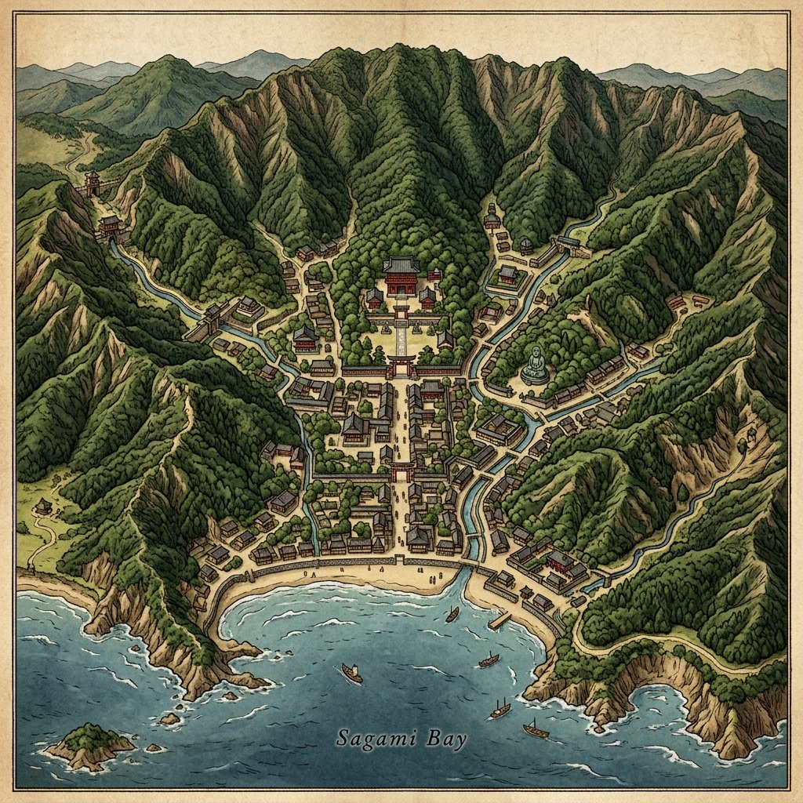

10. 武士の台頭と鎌倉幕府の成立
古代の平安時代末期、貴族に代わって武力を持つ「武士」が急速に力をつけました。今回は、源頼朝がどのようにして日本初の本格的な武家政権である「鎌倉幕府」を打ち立て、武士中心の社会を築いていったのか、その仕組みと歴史の流れを詳しく解説します！
1. 源平の戦いと鎌倉幕府の成立
平氏の棟梁である平清盛が亡くなった後、全国各地で平氏の支配に反発する源氏が挙兵しました。その中心となったのが、伊豆に流されていた源頼朝（みなもとのよりとも）です。
頼朝は弟の源義経（みなもとのよしつね）らを派遣して平氏を追い詰め、1185年の壇の浦の戦い（だんのうらのたたかい）（現在の山口県）でついに平氏を滅ぼしました。

図1：源氏と平氏の最後の決戦となった「壇の浦の戦い」のイメージ
① 守護・地頭の設置（1185年）
平氏を滅ぼした後、頼朝は対立した義経を捕らえることを名目に、1185年、国ごとに守護（しゅご）、荘園や公領（国の土地）ごとに地頭（じとう）を設置する権利を朝廷に認めさせました。この1185年こそが、実質的に武士が全国の支配権を握った「鎌倉幕府の成立」の年とされています。
② 征夷大将軍への就任（1192年）
1192年、源頼朝は朝廷から征夷大将軍（せいいたいしょうぐん）に任命され、名実ともに鎌倉幕府のトップとなりました。幕府が開かれた鎌倉（神奈川県）は、三方が山に囲まれ、一方が海に面した、敵から攻め込まれにくい自然の要塞でした。

図2：三方の山と南の海に守られた要害の地「鎌倉」の地勢イメージ
2. 将軍と御家人の結びつき（封建制度）
鎌倉幕府は、将軍と部下の武士である御家人（ごけにん）が、土地を媒介とした強い「主従関係」で結ばれていました。これを封建制度（ほうけんせいど）と呼びます。
御恩（ごおん）［将軍から御家人へ］
将軍が御家人に対し、祖先伝来の領地の支配を認めること（本領安堵）や、手柄に応じて新たな領地を与えること（新恩給与）。
奉公（ほうこう）［御家人から将軍へ］
御家人が将軍のために、いざという時に命がけで軍役（戦い）を果たしたり、京都や鎌倉の警備（京都大番役など）を行ったりすること。「いざ鎌倉」という言葉はここから来ています。
3. 執権政治と承久の乱
源頼朝の死後、将軍の力が衰えると、頼朝の妻である北条政子（ほうじょうまさこ）の実家である北条氏が台頭します。北条氏は将軍を補佐する最高職である執権（しっけん）の地位を独占し、幕府の実権を握りました。これを執権政治（しっけんせいじ）と呼びます。
① 承久の乱（1221年）
幕府の将軍交代の混乱を見て、朝廷の権力を取り戻そうとした後鳥羽上皇（ごとばじょうこう）は、1221年に北条義時（第2代執権）追討を求めて兵を挙げました。これが承久の乱（じょうきゅうのらん）です。
動揺する東国の御家人たちに対し、頼朝の妻・北条政子が「頼朝公の御恩は山よりも高く海よりも深い」と涙ながらに呼びかける大演説を行い、御家人たちは団結。幕府軍は朝廷軍を圧倒しました。

図3：御家人たちの心を一つにし、幕府の危機を救った「北条政子の演説」のイメージ
② 乱の後の影響と支配の拡大
承久の乱の勝利により、幕府の権力は朝廷をしのぐようになり、支配地域は西日本へも大きく広がりました。幕府は、乱の直後に朝廷を監視し、京都の警備を行うための機関として六波羅探題（ろくはらたんだい）を設置しました。
4. 御成敗式目の制定（1232年）
西日本へ支配が広がったことで、武士どうしの土地争いや、武士と公家・農民とのトラブルが急増しました。そこで第3代執権の北条泰時（ほうじょうやすとき）は、1232年に日本初の武家独自の法律である御成敗式目（ごせいばいしきもく／貞永式目）を制定しました。
これは全51条からなり、公家の法律ではなく、武士の社会で行われていた「道理」や「習慣（これまでのならわし）」をもとに、裁判を公平に行うための基準を示したものです。この法律は、その後の室町幕府や戦国大名の法律にも大きな影響を与え続けました。
🔥 この単元のテスト対策・暗記のコツ
定期テストで点数を稼ぐための最重要ポイントを整理しましょう！
-
★
守護と地頭の区別：
・守護は「国」ごとに置かれ、警察や軍事（大犯三ヶ条など）を担当。
・地頭は「荘園や公領」に置かれ、土地の管理や年貢の徴収を担当。 -
★
承久の乱（1221年）のセット暗記：
・首謀者は後鳥羽上皇、対応した幕府側は北条政子（演説）、結果として京都に置かれた監視機関は六波羅探題。「人、ブーブー（1221）言う承久の乱」と年号も覚えましょう。 -
★
御成敗式目（1232年）の目的：
・制定者は北条泰時。武士の道理や習慣を明文化した、初めての武家法律。対象は幕府の支配下にある武士のみ。朝廷の支配地や公家には適用されないという点も記述問題でよく問われます！